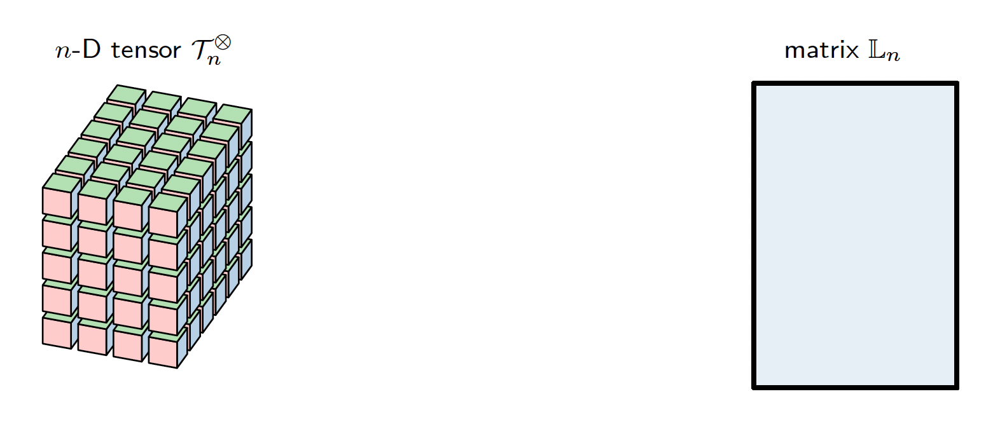

Get familiar with Loewner
The Loewner language and notations
As many tools, the Loewner framework comes with its own "language". Here we list some notations:
- Interpolation points (or support points): set of points $x_m$, where $m=1,\dots,M$
- Interpolation data: set of values $y_n$ evaluated at interpolation points $x_m$, through the unknown function $f$, i.e. $$ y_m=f(x_m)~,~m=1,\dots,M $$
- Data: interpolation and associated values, separated into columns and row sets, i.e. $$ \left\{ \begin{array}{rcl} P_c&:=&\left\{\left(\lambda_j;w_j\right), ~j=1,\ldots,{k}\right\}\\ P_r&:=&\left\{\left(\mu_i;v_i\right), ~i=1,\ldots,{q}\right\} \end{array} \right. $$ where for simplicity let (typically $k\leq N$) $$ \begin{array}{rclrcll} \lambda_j &=& x_j, & w_j&=& y_j & j=1,\dots,k\\ \mu_i &=& x_i, & w_i&=& y_i & i=k+1,\dots,M\\ \end{array} $$
- Loewner matrix $\mathbb{L}$: matrix constructed on the basis of the data
- $n$: number of variables of the function or tensor, i.e. $$ y=f(x_1,\dots,x_n) $$
In what follows, we detail the 1-D ($n=1$), 2-D ($n=2$) and generic $n$-D case.
The 1-D case
Let us first define the column and row data as: $$ \left\{ \begin{array}{rcl} P_c^{(1)}&:=&\left\{\left(\lambda_1(j_1);w(j_1)\right), ~j_1=1,\ldots,{k_1}\right\} \\ P_r^{(1)}&:=&\left\{\left(\mu_1(i_1);v(i_1)\right), ~i_1=1,\ldots,{q_1}\right\} \end{array} \right. . $$ It follows the 1-D Loewner matrix: $$ \mathbb{L}_1\in\mathbb{C}^{q_1\times k_1} $$ where each entry reads, $$ (\mathbb{L}_1)_{i_1,j_1} = \dfrac{v(i_1)-w(j_1)}{\mu_{1}(i_1)-\lambda_{1}(j_1)}. $$ The null-space of the Loewner matrix $$ \mathbf{c}_1 = \mathcal{N}(\mathbb{L}_1) $$ where $$ \mathbf{c}_1= \left[ \begin{array}{c} c(1)\\ c(2) \\ \vdots \\ c(k_1) \\ \end{array} \right]\in \mathbb{C}^{k_1} $$ provides the barycentric weigths of the Lagrange form $$ g(x_1) = \dfrac{\sum_{j_1=1}^{k_1} \dfrac{c(j_1)w(j_1)}{x_1-\lambda_{1}(j_1)}}{\sum_{j_1=1}^{k_1} \dfrac{c(j_1)}{x_1-\lambda_{1}(j_1)}}, $$ which interpolates the data and recovers the underlying 1-D function or 1-D data (under mild conditions).
The 2-D case
Let us first define the column and row data as: $$ \left\{ \begin{array}{rcl} P_c^{(2)}&:=&\left\{(\lambda_{1}(j_1),\lambda_{2}(j_2);w(j_1,j_2)), ~j_1=1,\ldots,k_1 \quad j_2=1,\ldots,k_2\right\} \\ P_r^{(2)}&:=&\left\{(\mu_{1}(i_1),\mu_{2}(i_2);v(i_1,i_2)),~i_1=1,\ldots,q_1 \quad i_2=1,\ldots,q_2 \right\} \end{array} \right. . $$ It follows the 2-D Loewner matrix: $$ \mathbb{L}_2\in\mathbb{C}^{q_1q_2\times k_1k_2} $$ where each entry reads, $$ \ell_{j_1,j_2}^{i_1,i_2} = \dfrac{v_{i_1,i_2}-w_{j_1,j_2}}{(\mu_{1}(i_1)-\lambda_{1}(j_1))(\mu_{2}(i_2)-\lambda_{2}(j_2))}. $$ The null-space of the Loewner matrix $$ \mathbf{c}_2 = \mathcal{N}(\mathbb{L}_2) $$ $$ \mathbf{c}_2= \left[ \begin{array}{c} c(1,1)\\ \vdots \\ c(1,k_2) \\ \hline \vdots \\ \hline c(k_1,1)\\ \vdots \\ c(k_1,k_2) \\ \end{array} \right]\in \mathbb{C}^{k_1k_2} $$ provides the barycentric weigths of the Lagrange form $$ g(x_{1},x_{2}) = \dfrac{\sum_{j_1=1}^{k_1}\sum_{j_2=1}^{k_2} \dfrac{c(j_1,j_2)w(j_1,j_2)}{(x_{1}-\lambda_{1}(j_1))(x_{2}-\lambda_{2}(j_2))}}{\sum_{j_1=1}^{k_1}\sum_{j_2=1}^{k_2} \dfrac{c(j_1,j_2)}{(x_{1}-\lambda_{1}(j_1))(x_{2}-\lambda_{2}(j_2))}} $$
The $n$-D case
From $n$-D tensor to Loewner matrix
$$ \begin{array}{ccl} \mathbb{C}^{k_1} \times\mathbb{C}^{q_1} \times \ldots \times \mathbb{C}^{k_n}\times \mathbb{C}^{q_n} \times \mathbb{C}^{(k_1+q_1)\times \cdots \times (k_n+q_n)} & \longrightarrow & \mathbb{C}^{Q\times K} \\ \left(\lambda_{1}(j_1),\mu_{1}(i_1),\ldots,\lambda_{n}(j_n),\mu_{n}(i_n),\mathcal{T}^{\otimes}_n\right) & \longmapsto & \mathbb{C}_n \end{array} $$